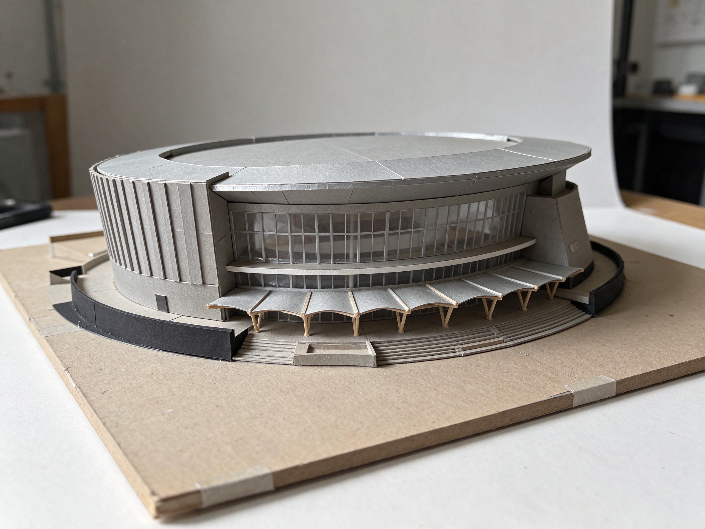
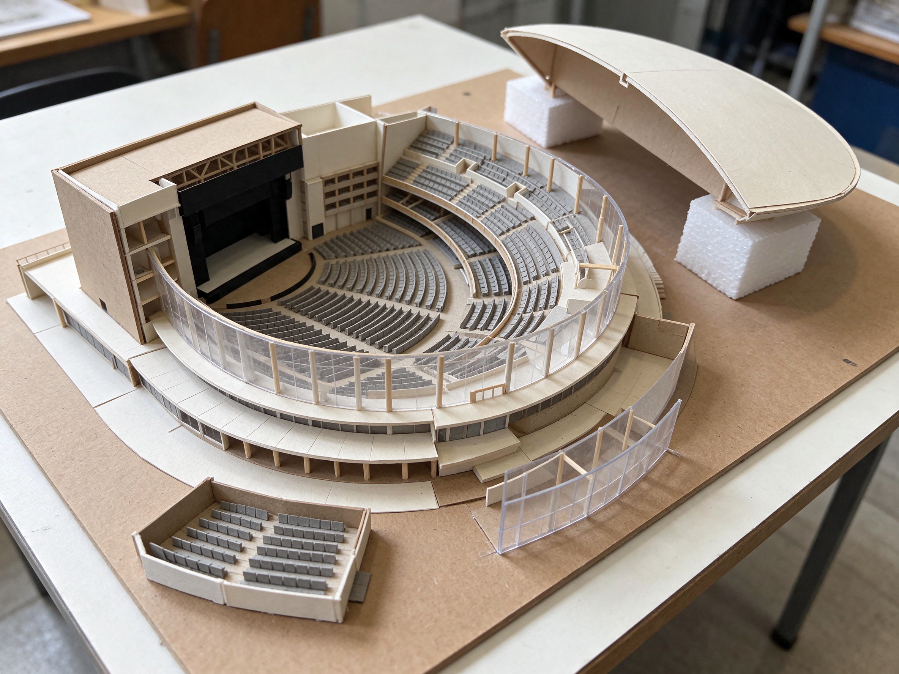

Maqueta del Auditorio Telmex
Guía práctica para construir una maqueta grande, económica y desmontable con materiales escolares. El modelo es conceptual: busca representar la silueta y los elementos principales del recinto, no sustituir planos arquitectónicos.

Objetivo y tamaño
La maqueta se propone con una base de 80 × 60 cm para que sea transportable. A escala 1:200, cada metro real equivale a 5 mm. El escenario de referencia de 33 × 24 m se representa aproximadamente como 16.5 × 12 cm. Se incluye el edificio, la explanada frontal y una pequeña franja de estacionamiento, no todo el terreno real.
Compra escolar
Materiales principales
- 2 cartones cascarón para base: $120
- 2 cartones pluma: $140
- Cartulinas gris, negra y café: $64
- Acetato transparente: $30
- Papel batería o cartón corrugado: $40
- Palitos de madera: $25
Acabados y herramientas
- Pintura acrílica escolar: $120
- Pegamento blanco: $45
- Cinta y silicón frío: $50
- Foamy, papel vegetal y detalles: $50
- Reserva para errores o reposición: $100
| Total estimado | $784 MXN |
| Límite disponible | $900 MXN |
Los precios son una planeación aproximada; pueden cambiar según la papelería. Se supone que ya se cuenta con tijeras, regla, lápiz, borrador y cúter. Si hay que comprarlos, usa primero la reserva.
Imágenes de referencia

Procedimiento
Une dos cartones cascarón de 80 × 60 cm. Marca el frente, el centro y la posición aproximada del volumen.
Apila cartón gris y cartulina negra para formar la base oscura del edificio y deja libre la explanada.
Recorta costillas curvas en cartón y cúbrelas con tiras de cartón pluma. Corrige la simetría antes de pegar definitivamente.
Construye la cubierta ovalada como pieza independiente con costillas de cartón. Debe poder quitarse para ver el interior.
Haz un marco curvo con cartulina y pega el acetato por dentro para simular el vidrio.
Añade tiras delgadas de cartulina gris en los laterales siguiendo la curva del edificio.
Forma gradas con tiras escalonadas de papel batería. Deja el escenario separado para mostrar concierto, teatro o platea.
Pinta concreto gris, plinto negro, vidrio azul grisáceo y escenario café. Dibuja juntas de la explanada con regla.
Compara la silueta con las referencias, fotografía cada módulo y anota qué medidas son verificadas o aproximadas.
Referencias
Datos públicos del recinto: sitio oficial. Muros nervurados curvos de concreto gris: Napresa. Flexibilidad de sala, plataformas y asientos: Akustiks.